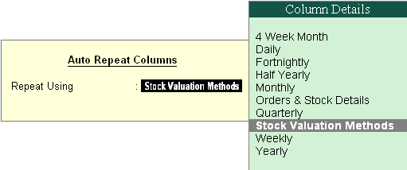

Multiple Stock Valuation
In Tally.ERP 9, you can evaluate the value of inventories using multiple Stock Valuation methods viz., Average Cost, Average price, Last Purchase cost, Last Sales price, FIFO etc. Tally.ERP 9 offers you the flexibility to have different stock valuation methods for every item or the entire stock of the company which is valued based on the specific type of costing method, chosen at the time of reporting. The user is allowed to view different methods of stock valuations in multiple columns.
To set Valuation Method for a stock item,
Go to Gateway of Tally > Inventory Info. > Stock Items > Alter
# Select the Stock Item
# Press F12: Configure and set Allow ADVANCED entries in Masters to Yes
# In Stock Item Alteration, specify the required Costing Method
To view Stock Summary in different Valuation Methods,
Go to Gateway of Tally > Stock Summary
# Select Auto Column (Alt+N) and select the required Stock valuation methods in Auto repeat columns.
